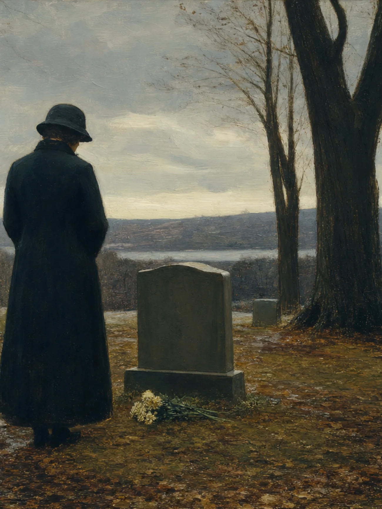
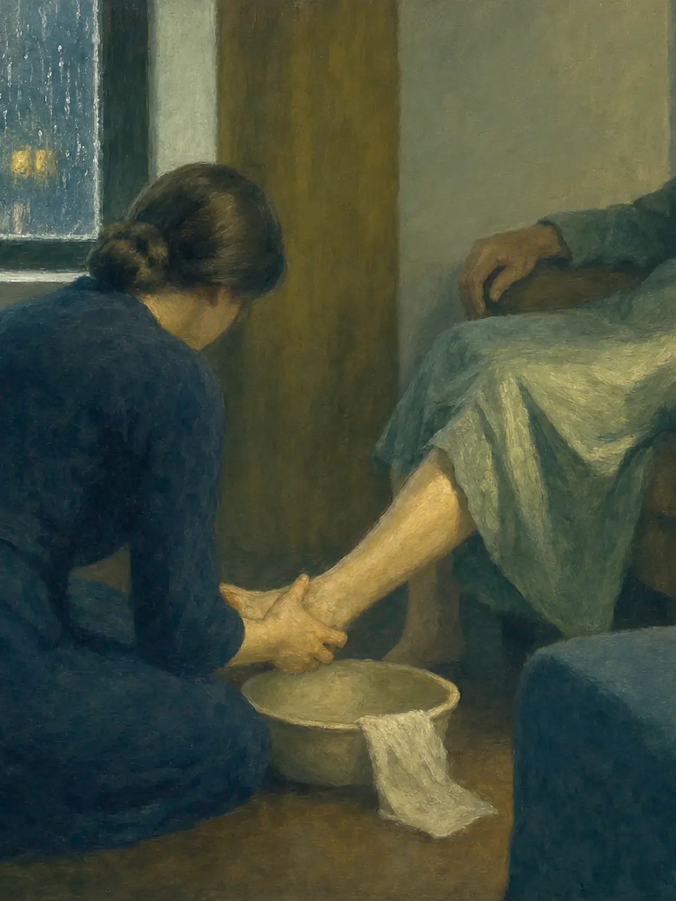

A Critical Study · Recurrence and Resurrection
“What Is Laid Down Is Taken Up”
Recurrence, mercy, and artistic resurrection in the work of James Mulhern — a first sustained scholarly study of the governing method across the fiction, poetry, and creative nonfiction.
I. The Architecture Beneath the Language
The work of James Mulhern has appeared in literary journals and anthologies more than three hundred times. His novel Give Them Unquiet Dreams received a Kirkus Star and was named a Kirkus Reviews Best Book of 2019. He was shortlisted for the Aesthetica Creative Writing Award, received a fully funded fellowship to Oxford University, and was a finalist for the Tuscany Prize in Catholic Fiction. And yet no peer-reviewed article, book chapter, or dissertation has focused on his fiction, poetry, or creative nonfiction. What follows is the first sustained scholarly attempt to identify the governing artistic method of this body of work.
The starting point is Mulhern’s own working philosophy, published on his author site in a document that functions as both craft statement and spiritual testament. In six movements — The Ordinary as Sanctuary, Mercy as Method, The Discipline of Attention, Revision as Listening, Writing as Communion, and Comedy and Reverence — Mulhern articulates a poetics built on two load-bearing ideas: what he calls “Repeated Incarnations” and “Resurrection.” These are not presented as creed or doctrine but as working principles, offered, in his words, “in a non-dogmatic, suggestive, and open way.”1 The central term is the Oversoul, borrowed from Emerson, rather than God or the Creator. The canonical formulation concludes: “In art, as in faith, what is laid down is taken up — and it becomes life eternal.”1
This study argues that the religious architecture of Mulhern’s work is not an interpretive structure imposed retrospectively upon scattered texts. It is the formal expression of a stated philosophy of writing. His works repeatedly incarnate persons, images, losses, inherited texts, and ordinary gestures so that they return not as copies of themselves but as changed presences. The process is sacramental in form but non-dogmatic in claim: it relies upon the Oversoul, mercy, attention, and relation rather than theological certainty. A complete concordance of religious and literary allusion across the collected fiction — now available as The Religious Architecture of James Mulhern’s Work: The Complete Study14 — has catalogued 1,027 passages matched to their sources in scripture, liturgy, hagiography, iconography, and a literary line running from Yeats and Joyce through Dante to Flannery O’Connor. The density of this catalogue is not accidental. It is the documentary footprint of a method.
II. “Watch the Shabby Detail”: The Ordinary as Sanctuary
Mulhern’s philosophy begins with a claim about where the sacred is to be found. “I have come to believe that the sacred is not sequestered in a far country,” he writes, “nor reserved for the ceremonies we have built to contain it. It abides here, in the unremarkable hours — in the kitchen light at six in the morning, in the faces we pass and neglect to see, in the small domestic liturgies we perform without knowing that we are performing them.”1
This is not a decorative sentiment. It is a compositional principle. The poems and stories repeatedly invest humble objects and gestures — a fire beneath a bridge, leaves raked at a graveside, ointment applied to an aging foot, a sign of the cross made in silence — with moral and metaphysical pressure that conventional theological language would reserve for explicitly sacred settings. Mulhern’s own formulation is precise: “Watch the shabby detail long enough to see what else it may contain.”1
In “Honeymoon,” the scene is unremarkable in outward terms. The room darkens. Rain taps a windowpane. A speaker kneels to apply ointment to a loved one’s heel. The poem does not declare this moment sacred. It makes it sacred through the quality of its attention:
The room darkens. The rain outside taps a pane.
I think of how far these feet have walked,
the tenderness at the bottom of her sole.2
The body is not idealized; it is vulnerable, aging, and particular. The speaker’s attention honors lived history: “how far these feet have walked.” Physical care becomes an aesthetic and moral action. Kneeling, touching, and remembering repeat the language and posture of ritual without requiring explicit theology. The ordinary becomes sanctuary because it is attended to without evasiveness.
This is the first principle of Mulhern’s recursive poetics: the ordinary is not a setting for the sacred. It is the site where the sacred is recognized. The distinction matters because it determines how every other element — image, gesture, allusion, character — is deployed. Nothing is merely background. A housedress with tiny roses, a bottle of suntan oil, a chipmunk crossing a patio: each is capable of bearing more weight than its first appearance suggests.
III. Repeated Incarnations: Fire, Leaves, and the Return of the Dead
The word “incarnation” is more precise than “motif” or “recurrence” for what Mulhern does. A motif merely returns. An incarnation returns in a new body, circumstance, form, or consciousness. That is the true structural principle behind the concordance. The same fire that blazes beneath a bridge in “Brother” reappears, transformed, in the speaker’s dark bedroom. The same leaves that are raked in a shared domestic task return at a graveside. The same phrase — “We’re done” — moves from the satisfaction of completed labor to the finality of death.
In “Brother,” two boys make a fire under a bridge in winter. The fire creates what the poem calls a “hallowed space,” set against “the cold brightness” outside.3 The poem’s final shift into the present tense is the key formal gesture:
In the blackness of my bedroom, sometimes a fire blazes.3
The past scene does not merely recollect itself. It becomes present. Fire functions simultaneously as warmth, memory, companionship, and a figure for reanimation. The temporal shift — from past tense narrative to present-tense experience — formally enacts recurrence: a past scene has crossed the threshold of memory and become active in the present. This is what Mulhern means by “Repeated Incarnations.” The fire does not repeat. It returns in a new form.
“Leaves” develops the same principle through a more complex temporal structure. The poem parallels past leaf-raking with present grave-tending, exploring themes of completion and ongoing connection. The speaker recalls a shared task and then returns to a graveside, where the words “We’re done” change meaning entirely:
Again, I smell the earth and feel the biting cold.
The damp leaves shimmer like tears, not many,
that drop on the yellowed grass.
We’re done, I hear you say. I say a prayer,
cross myself, and rise.
I see my breath and imagine I see yours.
I should leave, I think, but not yet.4
“We’re done” marks finality but also repeats a phrase from shared domestic life. The speaker’s breath and the imagined breath of the dead make absence present without pretending it is erased. The prayer and sign of the cross are actions, not doctrinal statements. “Not yet” prevents closure: the poem makes mourning a continuing relation rather than a completed act. This is where the term “artistic resurrection” can be defined with precision — not as literal return from death, but as the persistence of relation through formal re-encounter. The dead are not restored. They are made present again through the form of the poem.

IV. Mercy as Method: The Body, the Gesture, and the Unsaid
Mulhern’s second governing principle is mercy. “To summon a character into fuller being is an act of mercy rather than of judgment,” he writes.1 This principle operates not only in how characters are treated but in how the work is made. Mercy is a compositional method: it determines what is looked at, how long it is looked at, and what is withheld.
In “Brother Mike,” the most concise instance of this method appears. A silent brother’s sign of the cross becomes the occasion for the speaker’s question:
I felt a bit of awe or was it
what we call the sacred?5
The phrasing matters. The poem does not insist, “This is sacred.” The hesitation — “or was it” — preserves doubt. Yet the gesture remains meaningful. The sacred becomes not an imposed metaphysical certainty but an experience produced through embodied solidarity, memory, and attention. Mulhern’s religious vocabulary is questioning but not empty. Ritual survives as a language of care and relation, even when belief is uncertain.
The same principle governs the treatment of the body in decline. “I do not want to look past a body in decline — diabetic, gouty, bald, unsteady on its feet — on the way to something more dignified,” Mulhern writes. “A character’s diabetes, asthma, gout, baldness, and drinking need not be obstacles to holiness in a story; examined closely, they may be part of the ground from which it grows.”1 In “Honeymoon,” the aging body — calloused heels, the tenderness at the bottom of a sole — is not sentimentalized. It is witnessed. The kneeling posture of the caregiver inverts the usual power dynamics of narrative: the adult child serves the aging parent in a position of humble attention. In “Water,” an old man’s broken capillaries become “tributaries on arid land” and swollen ankles form “a delta.”6 The body becomes a landscape, mapped with geographical metaphors that create distance while acknowledging natural processes of decline. The water he cannot reach represents all the vitality and experience that remains visible but inaccessible.

This is mercy as method: the writer does not flinch from the actual body in front of them. Compassion, as Mulhern understands it, asks the writer to keep looking. Sentimentality begins when a writer looks away.
V. Intertextuality as Inheritance: From Emerson to O’Connor
Mulhern’s use of literary and scriptural sources is not ornamental. It is structural. The Kirkus starred review of Give Them Unquiet Dreams identified the novel’s “liberal use of quotes and sayings ranging from Bible verses to Thoreau and Yeats” as a constitutive feature of the work’s achievement.12 A scholarly research report on Mulhern’s corpus maps an intertextual network that includes scripture, Daniel Defoe, James Joyce, Flannery O’Connor, Edgar Allan Poe, Henry David Thoreau, Walt Whitman, Ralph Waldo Emerson, Emily Dickinson, W. B. Yeats, Langston Hughes, Carl Jung, and Eugene O’Neill.
The key distinction is between citation and assimilation. In postmodern pastiche, the precursor is displayed as a reference. In Mulhern’s method, the precursor is metabolized. The Thoreau quotation in Give Them Unquiet Dreams — “time is merely a stream we swim in”9 — is absorbed into the narrator’s consciousness, becoming part of the character’s spiritual vocabulary. In “A Perfect Hit,” Eugene O’Neill’s ghost haunts a dormitory where he died in 1953, and his last words are fulfilled when a student dies in the room. The reference to O’Neill is simultaneously local lore, literary allusion, ironic symbol, and plot device. It does not sit above the story; it inhabits the story’s world and shapes its atmosphere.
In “To Be,” the catalogue of literary objects moves from the canonical to the discarded:
I’d like to be the Wife of Bath’s scarlet stockings
Poor Yorick’s skull
Dickinson’s sherry in the glass
Gatsby’s dock …7
The poem then descends to ordinary and discarded things — a flattened sneaker, a crushed beer can, a lost sock. The movement democratizes cultural permanence: canonical objects matter because they persist in collective memory, but the progression toward the lowly insists that attention — not prestige — is what grants meaning. The speaker’s desire “to be” these things is a desire for relation, memory, and continuing presence. This is a miniature theory of Mulhern’s broader method: the overlooked can be brought into lasting imaginative life.
The intertextual network is not scholastic display. It is an epistemological claim. Mulhern’s essay “Teaching at Fifty-Six” states this directly: “Literature, as I see it, is the ladder hanging close to the side of the schooner … and I want my students to get wet.”10 The ladder is not a route out of life but a means of entering it. Literary knowledge becomes contact, risk, embodiment, and relation rather than professional display. The essay brings together Whitman’s invitation to “contain multitudes,” the demand to “find eternity in a moment,” Emerson’s “infinitude of the private man,” Dickinson’s “Dwell in possibilities,” Langston Hughes’s “Salvation” as a vehicle for religious doubt, and Jungian synchronicity. It concludes with teaching understood as “communion.”
This convergence of Catholic and Transcendentalist language is one of the most distinctive features of Mulhern’s method. His religious imagination is not reducible to theological assent. It is enacted as a discipline of attention: a willingness to enter experience, remain with ambiguity, and recognize that literature can make persons and moments newly available to one another. The Oversoul — Emerson’s term, not a conventional theological designation — provides the ground for this connectedness without requiring doctrinal commitment.
VI. The Concordance as Evidence: 1,027 Passages and the Architecture of Return
The most striking evidence for Mulhern’s recursive method is the complete concordance published as The Religious Architecture of James Mulhern’s Work: The Complete Study.14 This study has catalogued 1,027 passages across two novels, three story collections, the poems, and twenty-eight pieces published in literary magazines, matched to their sources in scripture, liturgy, hagiography, iconography, and a literary line running from Yeats and Joyce through Dante to Flannery O’Connor.
The value of this total does not rest on the assumption that every entry bears equal symbolic force. Its importance lies in showing the persistent, corpus-wide recurrence of a restricted set of images, structures, and conceptual relations. The critical argument depends not on numerical accumulation alone but on close readings of the most consequential networks. What the concordance demonstrates is density: the same images, gestures, scriptural echoes, and literary antecedents appear across genres and across years, not as occasional self-echo but as a deliberately sustained system of return.
The most concentrated instance of this system is the short story “Assumptions,”8 which is built on a dense religious substructure. Its epigraph from the Song of Solomon 4:7 — “You are altogether beautiful, and there is no flaw in you”13 — corresponds to the Marian antiphon Tota Pulchra Es. The story enacts the dogma of the Assumption on its protagonist, Peggy Fleming. Mulhern himself has described this not as planned allegory but as the product of sustained attention: “I do not think the religious architecture in a story like ‘Assumptions’ arrived because I sat down and planned a Marian allegory. I think it arrived because I kept returning to the same image — a woman anointed with oil on a beach, a housedress, a sea catching fire in the late light — until the language underneath the language declared itself.”15
This statement is the key to understanding the relationship between intention and method in Mulhern’s work. The religious architecture is not imposed after the fact. It emerges through revision — through the writer’s willingness to return to the same images and gestures until they disclose what they are actually for. Revision, in this understanding, is less a matter of correcting mistakes than of listening harder to a draft that may know more than the writer did when it was first composed. As Mulhern puts it: “I try to revise a sentence until it has discovered more than I knew when I began it.”1
VII. Comedy, Reverence, and the Unresolved Contradiction
Mulhern’s method resists a final category that might otherwise be overlooked: the coexistence of comedy and reverence in the same breath. “I do not believe moral seriousness and comedy are opposites,” he writes, “or that reverence and mockery cannot occupy the same sentence. My characters are cruel and devoted in the same breath because the people I grew up among were cruel and devoted in the same breath, and I have never trusted fiction that resolves that contradiction too neatly.”1
In Give Them Unquiet Dreams, the three-way contest between Irish folkloric second sight, Catholic sacramentalism, and secular psychiatric diagnosis is the novel’s central tension. The supernatural is not ornamental but structural: Aiden’s capacity for second sight is simultaneously a symptom (his mother is institutionalized for schizophrenia) and a genuine gift (Aiden shares it, and his grandfather’s spirit guides the plot). This ambiguity — between supernatural perception and mental illness, folk spirituality and institutional psychiatry — is never resolved. It is held in productive tension.
In “Useless Things,” an excerpt from the novel Molly Bonamici, the faith healer Lady Jane pronounces Mrs. Muldoon spiritually cleansed and labels Molly an “Angel of Death.”11 Mrs. Muldoon’s subsequent death fulfills the prophecy. The scene stages the comedy of folk spiritualism: the healing is patently fraudulent, yet delivers predictions fulfilled with grotesque precision. This is the O’Connor inheritance — grotesque characters as vehicles for grace — but it is inflected with Mulhern’s own commitment to mercy. The writer does not mock the fraudulent healer. The writer watches until the scene discloses what it is actually for.
VIII. Conclusion: What Is Laid Down Is Taken Up
James Mulhern’s work proposes that recurrence is not redundancy. A phrase revisited, an inherited story retold, a body tended, a grave approached, a brother remembered, a literary precursor re-entered, or a gesture of prayer performed again does not restore an original moment intact. It changes that moment by placing it in a new relation. Mulhern’s method is therefore neither nostalgia nor doctrinal reassurance. It is an artistic practice of return.
Across fiction, lyric, and creative nonfiction, Mulhern repeatedly turns ordinary acts into occasions of moral attention: a fire beneath a bridge becomes a “hallowed space”; a sign of the cross becomes an uncertain but genuine apprehension of “what we call the sacred”; raking leaves becomes a mourning ritual suspended between completion and the refusal to depart; the tending of a loved one’s feet becomes a recognition of time, bodily history, and devotion. In these scenes, care is not only a subject. It is the form’s governing ethic.
The intertextual dimension of Mulhern’s work extends this ethic beyond autobiography. Scripture, Transcendentalist thought, Irish literary inheritance, the Gothic, and canonical literature become forms of shared memory. They do not appear as ornaments of learning but as languages through which experience becomes intelligible. The writer’s task, as “Teaching at Fifty-Six” suggests, is not to stand above ordinary life and interpret it from safety; literature is a ladder meant to bring the reader into contact with life — to “get wet.”
Mulhern’s corpus thus enacts a non-dogmatic theory of artistic resurrection. Its purpose is not to defeat death, erase grief, or compel belief. Rather, it insists that what has been carefully attended to — what has been remembered, witnessed, shaped, and returned to language — can enter a renewed presence. The work’s deepest claim is ethical: no person, grief, gesture, object, or moment is finally negligible. What is laid down may be taken up again — not unchanged, not restored to a previous life, but made newly available through the transformative attention of art.
— A Critical Study
Notes
- 1. James Mulhern, “The Philosophy of Writing” (working philosophy), authorjamesmulhern.com. All quotations from the six movements — The Ordinary as Sanctuary, Mercy as Method, The Discipline of Attention, Revision as Listening, Writing as Communion, and Comedy and Reverence — are drawn from this document. ↩
- 2. James Mulhern, “Honeymoon,” in Crossings (Silver Current Press). ↩
- 3. James Mulhern, “Brother,” in Crossings (Silver Current Press). ↩
- 4. James Mulhern, “Leaves,” in Crossings (Silver Current Press). ↩
- 5. James Mulhern, “Brother Mike,” in Crossings (Silver Current Press). ↩
- 6. James Mulhern, “Water,” in Crossings (Silver Current Press). ↩
- 7. James Mulhern, “To Be,” in Crossings (Silver Current Press). ↩
- 8. James Mulhern, “Assumptions,” in All We Ever Needed (Silver Current Press, 2026). ↩
- 9. Henry David Thoreau, quoted in James Mulhern, Give Them Unquiet Dreams (Silver Current Press, 2019). ↩
- 10. James Mulhern, “Teaching at Fifty-Six,” authorjamesmulhern.com. ↩
- 11. James Mulhern, “Useless Things,” an excerpt from Molly Bonamici. ↩
- 12. Kirkus Reviews, starred review of Give Them Unquiet Dreams (2019). ↩
- 13. Song of Solomon 4:7. ↩
- 14. The Religious Architecture of James Mulhern’s Work: The Complete Study, authorjamesmulhern.com (1,027 catalogued passages). ↩
- 15. James Mulhern, Altogether Beautiful: The Religious Architecture of “Assumptions”, authorjamesmulhern.com. ↩
Works Quoted
Quotations are drawn from James Mulhern’s “The Philosophy of Writing” and the essays “Teaching at Fifty-Six” and Altogether Beautiful (all on this site); from the poems “Brother,” “Brother Mike,” “Leaves,” “Honeymoon,” “To Be,” and “Water,” collected in Crossings (Silver Current Press); from the story “Assumptions” in All We Ever Needed (Silver Current Press, 2026); from “Useless Things,” an excerpt from Molly Bonamici; from the novel Give Them Unquiet Dreams (Silver Current Press, 2019); from The Religious Architecture of James Mulhern’s Work: The Complete Study (1,027 catalogued passages); from the Kirkus Reviews starred review of Give Them Unquiet Dreams; and from Song of Solomon 4:7.
Every passage quoted here has been checked verbatim against its published source. Where the connection is inference rather than direct quotation, that is said plainly rather than implied.
Related essays on this site: The Religious Architecture of James Mulhern’s Work: The Complete Study provides the full concordance; Altogether Beautiful reads the religious architecture of “Assumptions” in depth; and The Philosophy of Writing presents the working philosophy this study treats as its point of departure.
All Essays The Religious Architecture: Complete Study → A Working Philosophy